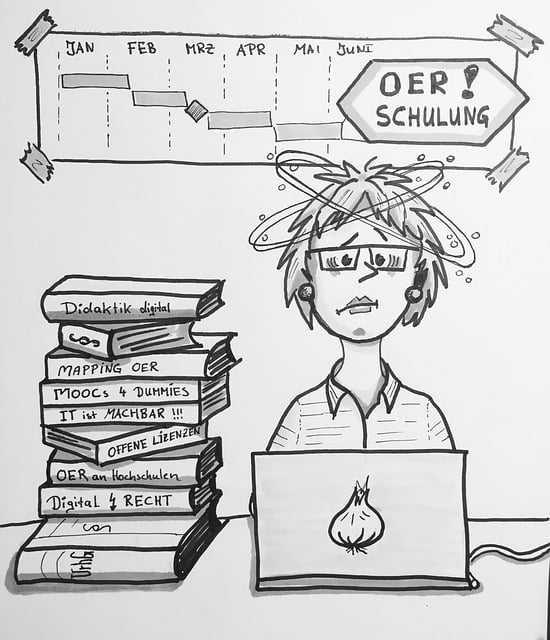

Curación de contenidos

La curación de contenidos está basada en un diseño pedagógico enfocado a la creación de un producto final, es decir, a la elaboración de programas de concierto y sus correspondientes notas al programa, de nivel profesional en relación a su contexto musicológico y estético.
- Necesidades. Partimos de la necesidad de cualquier músico, ya sea profesional o estudiante, de conectar con el público. Para que esta conexión se produzca es esencial que el oyente comprenda la obra. Por lo tanto, es necesario identificar que información tanto del contexto histórico como de los recursos técnicos y expresivos de la obra hay que resaltar.
- Selección y filtro. A la hora de seleccionar la información más idónea debemos discriminar entre artículos de opinión y fuentes de rigor, como pueden ser ediciones Urtext, grabaciones de intérpretes de reconocido prestigio, ensayos musicológicos contrastados o tesis doctorales relacionadas con las obras.
- Organización de la información. Para que tanto el programa como las notas cumplan con su objetivo clasificamos la información de forma estructurada en tres apartados: biografías y contexto del compositor; guías de escucha; y herramientas de diseño gráfico. De esta forma, el alumno puede gestionar de forma profesional su programa desde el primer día.
- Difusión. Todos estos contenidos se distribuyen a través de entornos digitales, enfocados como bibliotecas de recursos.
- Medición de resultados. Finalmente se presentan los borradores de las notas al programa que han realizado, comprobando si han sido capaces de transformar el lenguaje técnico y específico utilizado en la información recogida a un lenguaje más personal y cercano que permita esa comprensión y conexión con el público, realizando las retroalimentaciones necesarias en cada caso. Finalmente deben explicar las herramientas digitales de diseño que han utilizado para la elaboración del programa.